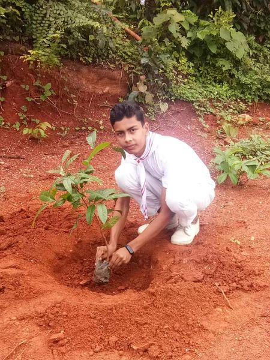

2018 അദ്ധ്യയന വർഷത്തിൽ ലിറ്റിൽ കൈറ്റ്സ് എച്ച്.എം.വൈ.എച്ച്.എസ്.എസ്. മഞ്ചേരി യൂണിറ്റിന് തുടക്കം കുറിച്ചു. സ്കൂളിൽ നിന്നും തിരഞ്ഞെടുക്കപ്പെട്ട 35 കുട്ടികൾ യൂണിറ്റിൽ പ്രവർത്തിച്ചു വരുന്നു. എല്ലാ ബുധനാഴ്ചയും വൈകുന്നേരം 3.30 മുതൽ 4.30 വരെയുള്ള സമയം ലിറ്റിൽ കൈറ്റ്സിന്റെ റെഗുലർ ക്ലാസ് നടത്തുന്നു. കൂടാതെ തിരഞ്ഞെടുക്കപ്പെട്ട ശനിയാഴ്ചകളിൽ പ്രഗത്ഭരുടെ ക്ലാസും നടന്നു വരുന്നു.
ഇന്ത്യയിലെ കുട്ടികളുടെ ഏറ്റവും വലിയ ഐ റ്റി കൂട്ടായ്മയായ ലിറ്റിൽ കൈറ്റ്സിന്റെ എച്ച്.എം.വൈ.എച്ച്.എസ്.എസ്. മഞ്ചേരി ആദ്യ ബാച്ചിന്റെ ആദ്യ യോഗം 01-06-2018 വെള്ളിയാഴ്ച 2.30ന് നടന്നു.
2018-19 അദ്ധ്യയന വർഷത്തിലെ ലിറ്റിൽ കൈറ്റ്സിന്റെ ആദ്യ പരിശീലനം 06-06-2018 ബുധനാഴ്ച നടന്നു. മാസ്റ്റർ ട്രെയ്നർ ഉസ്മാൻ സാറായിരുന്നു മുഖ്യ പരിശീലകൻ.
മുൻ അദ്ധ്യയനവർഷാന്ത്യത്തിൽ ലിറ്റിൽ കൈറ്റ്സിൽ ചേരാൻ കഴിയാത്തവർക്കും പുതിയ കുട്ടികൾക്കും അവസരം ഒരുക്കികൊണ്ട് 02-07-2018ന് ഒരു അഭിരുചി പരീക്ഷകൂടി നടത്തപ്പെട്ടു. ലിറ്റിൽ കൈറ്റ് അധ്യാപകരുടെ നേതൃത്വത്തിലായിരുന്നു പ്രവേശനപരീക്ഷ നടന്നത്.
CYBER SECURITY അമ്മ അറിയാൻ പരിപാടി മെയ് 28 വിപുലമായ പരിപാടികളോട് കൂടി നടന്നു. നൂറോളം അമ്മമാർ പരിപാടിയിൽ പങ്കെടുത്തു പരിപാടി വിജയിപ്പിച്ചു. പത്താം ക്ലാസ്സ് വിദ്യാർഥികളായ ഷെസ മറിയം, ആയിഷ ദിയാന,വർദ്ദ മുസ്തഫി,ആയിഷ തസ്ഫിയ,ഹിബ നസ്രിൻ,ഹിബ ഷെറിൻ,നഷ്വ അബ്ദുൽ മജീദ്, നേന മറിയം, അതുലജ്, യഹ്യ എന്നിവരാണ് ക്ലാസ്സ് എടുത്തത്. ഹെഡ്മാസ്റ്റർ ഷുക്കൂർ സർ പരിപാടി ഉൽഘാടനം ചെയ്തു KITE MISTRESS അസീന സ്വാഗതവും നിയുക്ത ഹെഡ്മാസ്റ്റർ ഷകീൽ സർ SITC ഷമീൽ സർ ആശംസകളും KITE MISTRESS ഷെറീന നന്ദിയും പറഞ്ഞു. രക്ഷിതാക്കൾക്ക് അവരുടെ അഭിപ്രായങ്ങൾ പങ്കു വെക്കാനുള്ള അവസരവും നൽകി.
2022 ജനുവരി 20നു ലിറ്റിൽ കൈറ്റ്സ് ന്റെ സ്കൂൾ തല ഏകദിന ക്യാമ്പ് ഹെഡ്മാസ്റ്റർ ഷുക്കൂർ സർ ഉത്ഘാടനം ചെയ്തു.40 കുട്ടികൾ പങ്കെടുക്കുകയും external Resource person ആയി ജുബൈർ സർ, കൈറ്റ് മിസ്ട്രെസ്സ് ഷെറീന ടിപി, അസീന കെപി എന്നിവർ ലിറ്റിൽ കൈറ്റ്സ് അംഗങ്ങൾക്ക് പരിശീലനം നൽകി.
2022 July 2,Little kites nte അഭിരുചി പരീക്ഷ നടത്തി.97 വിദ്യാർത്ഥികൾ പരീക്ഷയിൽ പങ്കെടുക്കാൻ ലാബിൽ എത്തിച്ചേർന്നു.41 വിദ്യാർഥികൾ little kites ലേക്ക് അർഹത നേടി
റെഡ് ക്രോസ് തത്വങ്ങളും ആശയങ്ങളും മനസിലാക്കി, പ്രസ്ഥാനത്തിൽ സജീവമായി പങ്കെടുത്ത് യുവതലമുറയെ അവരുടെ മാനുഷിക മനോഭാവം വളർത്തിയെടുക്കാൻ പ്രോത്സാഹിപ്പിക്കുന്നതിന് 1922 ൽ ജൂനിയർ റെഡ് ക്രോസ് സ്ഥാപിതമായി. ജൂനിയർ റെഡ് ക്രോസിന്റെ പിന്നിലെ സമഗ്രമായ ആശയം രാജ്യത്തെ യുവാക്കളെ പ്രാപ്തരാക്കുക എന്നതാണ്, അതിലൂടെ അവർ ഒരു ദിവസം ലോകസമാധാനം സ്ഥാപിക്കുന്നതിനും മനുഷ്യരാശിയുടെ ക്ഷേമത്തിനും അവരുടേതായ രീതിയിൽ സംഭാവന നൽകാം.
WORLD ENVIORNMENT DAY
HMYHSS ലെ JRC വിദ്യാർത്ഥികൾ തങ്ങളുടെ സഹപാഠിക്ക് നിർമിച്ച *സ്നേഹ വീട് 3* യുടെ സമർപ്പണം തദ്ദേശസ്വയംഭരണ വകുപ്പ് മന്ത്രി KT ജലീൽ നിർവഹിച്ചു.ഓരോ വർഷവും ഒരു വീട് എന്ന പദ്ധതിയുടെ ഭാഗമാണ് പയ്യനാട് താമരശ്ശേരിയിൽ നിർമ്മിച്ച സ്നേഹവീട്. മുമ്പ് ട്രയിനിൽ അപകടത്തിൽ മരണപ്പെട്ട സ്കൂളിലെ ഒരു സ്പോർട്സ് താരത്തിന് കാരകുന്നും, കഴിഞ്ഞ വർഷം സ്കൗട്ട് & ഗൈഡ്സ് പുല്ലൂരിൽ നിർമ്മിച്ച മറ്റൊരു വീടുമാണ് മുൻ സംരഭങ്ങൾ. കുട്ടികളിൾ,രക്ഷിതാക്കൾ, അധ്യാപകർ, പൂർവ വിദ്യാർത്ഥികൾ, സ്ഥാപനങ്ങൾ എന്നിവരുടെ സാമ്പത്തിക സഹായത്തോടെയാണ് പദ്ധതി നടപ്പാക്കുന്നത്. സമർപ്പണ പൊതുയോഗത്തിൽ മഞ്ചേരി MLA M.ഉമ്മർ അധ്യക്ഷത വഹിച്ചു. അബൂബക്കർ സർ റിപ്പോർട്ട് വായിച്ചു. മുനിസിപ്പൽ അധ്യക്ഷ VM സുബൈദ, വൈസ് ചെയർമാൻ VP ഫിറോസ്, പ്രതിപക്ഷ നേതാവ് അഡ്വാ: ഫിറോസ് ബാബു, വാർഡ് കൗൺസിലർ രജിത, സജ്ന ടീച്ചർ, മുസ്തഫ കൊല്ലേരി, ഇപ്പു, K.സലീം, K.ഉബൈദ് എന്നിവർ ആശംസകൾ അർപ്പിച്ചു. ഹെഡ്മാസ്റ്റർ അബ്ദുൽ ശുക്കൂർ സ്വഗതവും കൺവീനർ കമാൽ മാഷ് നന്ദിയും പറഞ്ഞു.